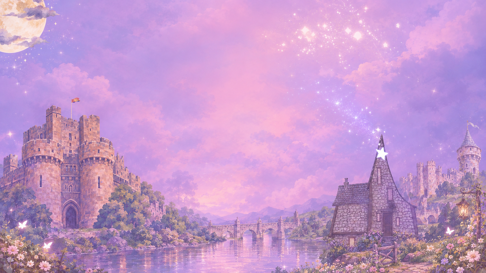

A story of dreams & strange places
Dreamfall
Where strange feels familiar.
Nessa wakes in a world she cannot remember, with a talking cat at her side and a path that seems to lead somewhere far stranger than home.
Explore the World
✦ ✧ ✦
A Dream Unlike Any Other
Dreamfall is a whimsical fantasy world where dreams, memories, and reality overlap. Strange doors appear where they should not, old magic lingers in unexpected places, and the people you meet may know more about you than you know about yourself.
The Star Inn
The safest place Nessa has found is the Star Inn — a refuge where magic keeps weapons and violence from being used inside its walls.
But safety does not mean answers. Somewhere beyond the inn is a one-way portal, and no one seems to know who created it.
Read the lore →